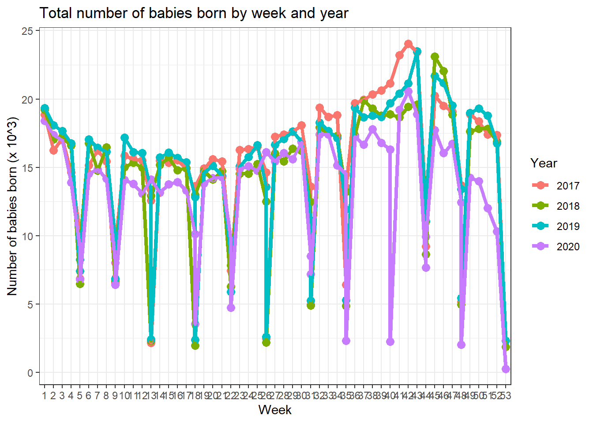

Data Exploration
2020-01-29 (update: 2021-01-31)
Last updated: 2021-01-31
Checks: 6 1
Knit directory: Vaccination_COVID/
This reproducible R Markdown analysis was created with workflowr (version 1.6.2). The Checks tab describes the reproducibility checks that were applied when the results were created. The Past versions tab lists the development history.
The R Markdown file has unstaged changes. To know which version of the R Markdown file created these results, you’ll want to first commit it to the Git repo. If you’re still working on the analysis, you can ignore this warning. When you’re finished, you can run wflow_publish to commit the R Markdown file and build the HTML.
Great job! The global environment was empty. Objects defined in the global environment can affect the analysis in your R Markdown file in unknown ways. For reproduciblity it’s best to always run the code in an empty environment.
The command set.seed(20210126) was run prior to running the code in the R Markdown file. Setting a seed ensures that any results that rely on randomness, e.g. subsampling or permutations, are reproducible.
Great job! Recording the operating system, R version, and package versions is critical for reproducibility.
Nice! There were no cached chunks for this analysis, so you can be confident that you successfully produced the results during this run.
Great job! Using relative paths to the files within your workflowr project makes it easier to run your code on other machines.
Great! You are using Git for version control. Tracking code development and connecting the code version to the results is critical for reproducibility.
The results in this page were generated with repository version 7faa377. See the Past versions tab to see a history of the changes made to the R Markdown and HTML files.
Note that you need to be careful to ensure that all relevant files for the analysis have been committed to Git prior to generating the results (you can use wflow_publish or wflow_git_commit). workflowr only checks the R Markdown file, but you know if there are other scripts or data files that it depends on. Below is the status of the Git repository when the results were generated:
Ignored files:
Ignored: .DS_Store
Ignored: .Rhistory
Ignored: .Rproj.user/
Unstaged changes:
Modified: Vaccination_COVID.Rproj
Modified: analysis/01_data_cleaning.Rmd
Modified: analysis/02_data_exploration.Rmd
Note that any generated files, e.g. HTML, png, CSS, etc., are not included in this status report because it is ok for generated content to have uncommitted changes.
These are the previous versions of the repository in which changes were made to the R Markdown (analysis/02_data_exploration.Rmd) and HTML (docs/02_data_exploration.html) files. If you’ve configured a remote Git repository (see ?wflow_git_remote), click on the hyperlinks in the table below to view the files as they were in that past version.
| File | Version | Author | Date | Message |
|---|---|---|---|---|
| Rmd | 7faa377 | lampk | 2021-01-31 | put codes for importing & merging data into a separate R script |
| Rmd | 6096f70 | lampk | 2021-01-29 | resolve conflict |
| Rmd | 9e4de01 | lampk | 2021-01-29 | P0406 |
| Rmd | 8d452b3 | lampk | 2021-01-29 | update merge data |
library(data.table)
library(tidyverse)── Attaching packages ──────────────────────────────────────────────────────────────────────────────────────────────────────── tidyverse 1.3.0 ──✓ ggplot2 3.3.2 ✓ purrr 0.3.4
✓ tibble 3.0.3 ✓ dplyr 1.0.2
✓ tidyr 1.1.2 ✓ stringr 1.4.0
✓ readr 1.3.1 ✓ forcats 0.5.0Warning: package 'tibble' was built under R version 4.0.2Warning: package 'tidyr' was built under R version 4.0.2Warning: package 'dplyr' was built under R version 4.0.2── Conflicts ─────────────────────────────────────────────────────────────────────────────────────────────────────────── tidyverse_conflicts() ──
x dplyr::between() masks data.table::between()
x dplyr::filter() masks stats::filter()
x dplyr::first() masks data.table::first()
x dplyr::lag() masks stats::lag()
x dplyr::last() masks data.table::last()
x purrr::transpose() masks data.table::transpose()library(lubridate)
Attaching package: 'lubridate'The following objects are masked from 'package:data.table':
hour, isoweek, mday, minute, month, quarter, second, wday, week,
yday, yearThe following objects are masked from 'package:base':
date, intersect, setdiff, unionlibrary(ggplot2)
library(gt)Warning: package 'gt' was built under R version 4.0.2library(gtsummary)Warning: package 'gtsummary' was built under R version 4.0.2Quick look at babies
Quick look at vaccine shots
# vaccine <- readRDS(file = file.path("..", "tuann349_vad", "vaccine.rds"))
# vaccine$vyear <- year(vaccine$vacdate)
# vaccine$vmonth <- month(vaccine$vacdate)
#
# vaccine_overall <- vaccine[, .N, by = .(vyear, vmonth)]
# vaccine_province <- vaccine[, .N, by = .(vyear, vmonth, province)]
# vaccine_vacname <- vaccine[, .N, by = .(vyear, vmonth, vacname)]
# vaccine_province_vacname <- vaccine[, .N, by = .(vyear, vmonth, province, vacname)]
#
# save(vaccine_overall, vaccine_province, vaccine_vacname, vaccine_province_vacname, file = file.path("..", "tuann349_vad", "vaccine.Rdata"))
#
# tab_vac_sum <- tbl_summary(vaccine[vyear >= 2017 & vyear <= 2020, .(province, vacname, factor(vyear))])
#
# save(tab_vac_sum, file = file.path("..", "tuann349_vad", "tab_vaccine.Rdata"))
#load(file.path("..", "tuann349_vad", "vaccine.Rdata"))
load(file.path("..", "tuann349_vad", "tab_vaccine.Rdata"))Descriptive table
tab_vac_sum| Characteristic | N = 30,020,5961 |
|---|---|
| province | |
| Bac Giang | 1,593,114 (5.3%) |
| Bac Kan | 244,969 (0.8%) |
| Bac Ninh | 927,685 (3.1%) |
| Cao Bang | 379,472 (1.3%) |
| Dien Bien | 575,324 (1.9%) |
| Ha Giang | 734,041 (2.4%) |
| Ha Nam | 617,536 (2.1%) |
| Ha Noi | 3,834,605 (13%) |
| Ha Tinh | 1,031,343 (3.4%) |
| Hai Duong | 1,185,616 (3.9%) |
| Hai Phong | 1,144,016 (3.8%) |
| Hoa Binh | 608,577 (2.0%) |
| Hung Yen | 817,366 (2.7%) |
| Lai Chau | 430,683 (1.4%) |
| Lang Son | 607,511 (2.0%) |
| Lao Cai | 605,027 (2.0%) |
| Nam Dinh | 1,343,074 (4.5%) |
| Nghe An | 2,527,440 (8.4%) |
| Ninh Binh | 790,585 (2.6%) |
| Phu Tho | 1,006,410 (3.4%) |
| Quang Ninh | 826,889 (2.8%) |
| Son La | 1,107,017 (3.7%) |
| Thai Binh | 1,188,140 (4.0%) |
| Thai Nguyen | 918,145 (3.1%) |
| Thanh Hoa | 2,794,480 (9.3%) |
| Tuyen Quang | 597,594 (2.0%) |
| Vinh Phuc | 911,317 (3.0%) |
| Yen Bai | 672,620 (2.2%) |
| vacname | |
| BCG | 3,218,907 (11%) |
| BKT 0,1ml tu khoa (BCG) | 16 (<0.1%) |
| BKT 0.1ml (BCG) | 532 (<0.1%) |
| BKT 0.5 ml | 1,523 (<0.1%) |
| BKT 1 ml | 91 (<0.1%) |
| BKT 5 ml | 4 (<0.1%) |
| ComBE Five | 1,281,358 (4.3%) |
| DPT | 1,137,987 (3.8%) |
| DPT-VGB-HIB (SII) | 2,087,750 (7.0%) |
| IPV | 1,161,904 (3.9%) |
| MR | 1,651,326 (5.5%) |
| OPV | 6,543,601 (22%) |
| Quinvaxem | 3,178,125 (11%) |
| Soi | 2,182,377 (7.3%) |
| Uon van | 2,182 (<0.1%) |
| Vac xin uon van bach hau hap phu (Td) (Hop 10 lo 5ml) | 245 (<0.1%) |
| VAT (Lo 20 lieu) | 681 (<0.1%) |
| Viem gan B | 38,335 (0.1%) |
| Viem gan B so sinh | 2,449,628 (8.2%) |
| VNNB | 5,084,024 (17%) |
| vyear | 2,019.00 (2,018.00, 2,020.00) |
|
1
Statistics presented: n (%); Median (IQR)
|
|
Overall
ggplot(data = vaccine_overall[vyear >= 2017 & vyear <= 2020], aes(x = factor(vmonth), y = N/1000, color = factor(vyear))) +
geom_rect(aes(xmin = 3, xmax = 5, ymin = -Inf, ymax = Inf), fill = "grey90", color = "grey90", alpha = 0.015) +
geom_point(size = 3) +
geom_line(aes(group = vyear), size = 1.5) +
scale_x_discrete(name = "Month") +
scale_y_continuous(name = "Number of shot (x 10^3)", breaks = seq(from = 50, to = 1100, by = 100)) +
scale_color_discrete(name = "Year") +
theme_bw() +
ggtitle("Total number of vaccination shot by month and year")By province
ggplot(data = vaccine_province[vyear >= 2017 & vyear <= 2020], aes(x = factor(vmonth), y = N/1000, color = factor(vyear))) +
geom_rect(aes(xmin = 3, xmax = 5, ymin = -Inf, ymax = Inf), fill = "grey90", color = "grey90", alpha = 0.015) +
geom_point() +
geom_line(aes(group = vyear)) +
scale_x_discrete(name = "Month") +
scale_y_continuous(name = "Number of shot (x 10^3)") +
scale_color_discrete(name = "Year") +
facet_wrap(~ province, scale = "free_y") +
theme_bw() +
theme(legend.position = "bottom") +
ggtitle("Number of vaccination shot in each province by month and year")
By vaccine
ggplot(data = vaccine_vacname[vyear >= 2017 & vyear <= 2020], aes(x = factor(vmonth), y = N)) +
geom_rect(aes(xmin = 3, xmax = 5, ymin = -Inf, ymax = Inf), fill = "grey90", color = "grey90", alpha = 0.015) +
geom_point(aes(color = factor(vyear))) +
geom_line(aes(group = vyear, color = factor(vyear))) +
scale_x_discrete(name = "Month") +
scale_y_continuous(name = "Number of shot") +
scale_color_discrete(name = "Year") +
facet_wrap(~ vacname, scale = "free_y") +
theme_bw() +
theme(legend.position = "bottom") +
ggtitle("Number of shot of each vaccine by month and year")
In Cao Bang, Ha Noi and Nghe An by vaccine
ggplot(data = vaccine_province_vacname[vyear >= 2017 & vyear <= 2020 & province %in% c("Cao Bang", "Ha Noi", "Nghe An")], aes(x = factor(vmonth), y = N)) +
geom_rect(aes(xmin = 3, xmax = 5, ymin = -Inf, ymax = Inf), fill = "grey90", color = "grey90", alpha = 0.015) +
geom_point(aes(color = factor(vacname))) +
geom_line(aes(group = vacname, color = factor(vacname))) +
scale_x_discrete(name = "Month") +
scale_y_continuous(name = "Number of shot") +
scale_color_discrete(name = "Name of vaccine") +
facet_grid(province ~ vyear, scale = "free_y") +
theme_bw() +
theme(legend.position = "bottom") +
ggtitle("Number of shot of each vaccine by province and time")
sessionInfo()R version 4.0.1 (2020-06-06)
Platform: x86_64-apple-darwin17.0 (64-bit)
Running under: macOS Catalina 10.15.4
Matrix products: default
BLAS: /Library/Frameworks/R.framework/Versions/4.0/Resources/lib/libRblas.dylib
LAPACK: /Library/Frameworks/R.framework/Versions/4.0/Resources/lib/libRlapack.dylib
locale:
[1] en_US.UTF-8/en_US.UTF-8/en_US.UTF-8/C/en_US.UTF-8/en_US.UTF-8
attached base packages:
[1] stats graphics grDevices utils datasets methods base
other attached packages:
[1] gtsummary_1.3.5 gt_0.2.2 lubridate_1.7.9 forcats_0.5.0
[5] stringr_1.4.0 dplyr_1.0.2 purrr_0.3.4 readr_1.3.1
[9] tidyr_1.1.2 tibble_3.0.3 ggplot2_3.3.2 tidyverse_1.3.0
[13] data.table_1.12.8
loaded via a namespace (and not attached):
[1] Rcpp_1.0.5 assertthat_0.2.1 rprojroot_1.3-2 digest_0.6.25
[5] R6_2.4.1 cellranger_1.1.0 backports_1.1.8 reprex_0.3.0
[9] evaluate_0.14 httr_1.4.2 pillar_1.4.6 rlang_0.4.7
[13] readxl_1.3.1 rstudioapi_0.11 whisker_0.4 blob_1.2.1
[17] checkmate_2.0.0 rmarkdown_2.3 labeling_0.3 munsell_0.5.0
[21] broom_0.7.1 compiler_4.0.1 httpuv_1.5.4 modelr_0.1.8
[25] xfun_0.19 pkgconfig_2.0.3 htmltools_0.5.0 tidyselect_1.1.0
[29] workflowr_1.6.2 fansi_0.4.1 crayon_1.3.4 dbplyr_1.4.4
[33] withr_2.2.0 later_1.1.0.1 commonmark_1.7 grid_4.0.1
[37] jsonlite_1.7.0 gtable_0.3.0 lifecycle_0.2.0 DBI_1.1.0
[41] git2r_0.27.1 magrittr_1.5 scales_1.1.1 cli_2.0.2
[45] stringi_1.4.6 farver_2.0.3 fs_1.4.1 promises_1.1.1
[49] xml2_1.3.2 ellipsis_0.3.1 generics_0.0.2 vctrs_0.3.2
[53] tools_4.0.1 glue_1.4.1 hms_0.5.3 yaml_2.2.1
[57] colorspace_1.4-1 rvest_0.3.5 knitr_1.30 haven_2.3.1
[61] sass_0.2.0